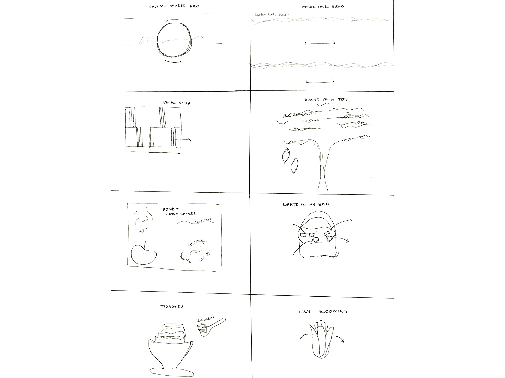
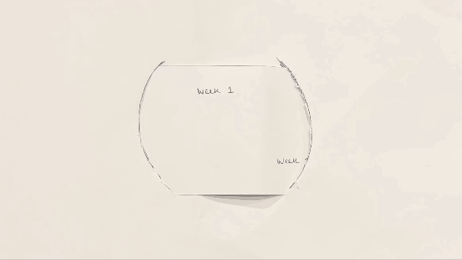
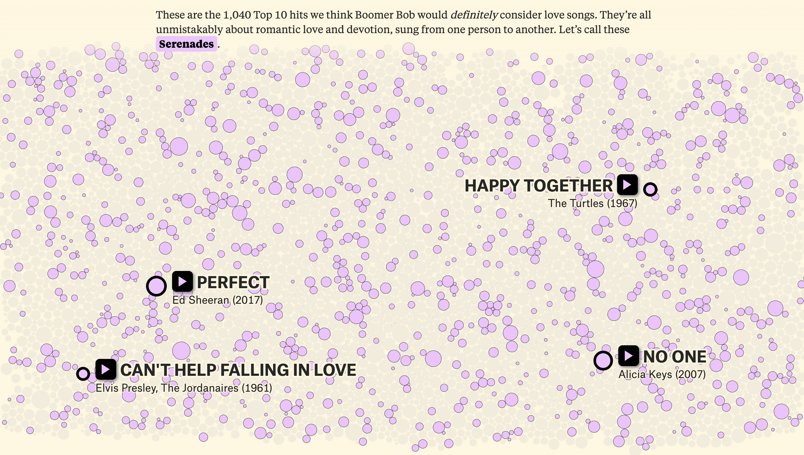
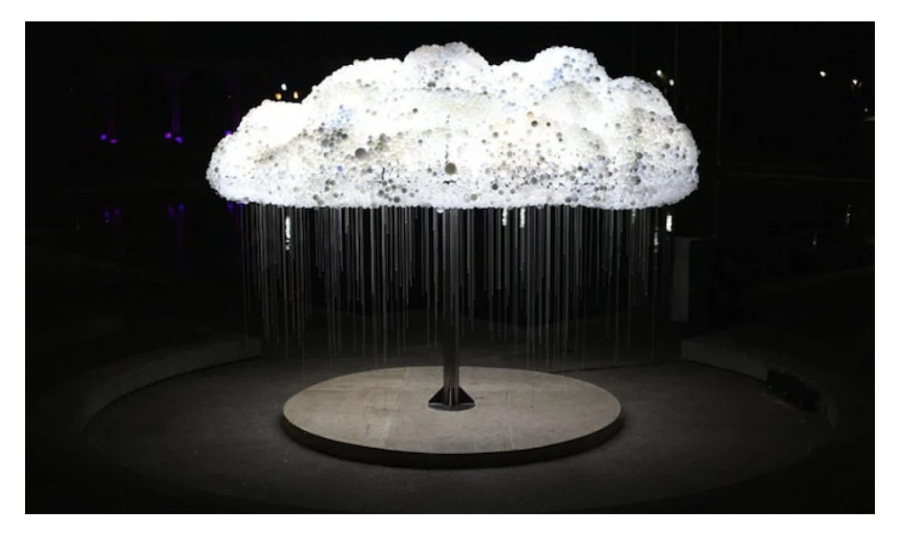

Week 2
Paper Prototyping
- Paper prototyping is a quick, low-cost way to sketch out ideas before digital design.
- Crazy Eights is a rapid ideation technique where you fold a paper into eight sections and sketch eight different design ideas in eight minutes.
- Wireframes are more structured, hand-drawn sketches that map out layouts and interactions.
Crazy 8's:
Workbook Homepage Wireframe:
The logo is interactive and rotates in response to user manipulation.
Designing for the Web
Web design involves creating visually appealing, user-friendly, and responsive websites. It includes considerations like typography, color schemes, layout, and accessibility.
Sample Website Demo:

Readings, Case Studies and Inspo
Is the Love Song Dying?
Loved the user experience — felt like a game. Enjoyed the visualisation of the songs and the way it’s categorised by size. Also loved that you can click and listen to the songs. The hover feature over every little dot added an extra layer of detail — so impressive! 
Interactive Cloud Installation Made Of 6,000 Lightbulbs
Focuses on the user experience — no real aim but the joy you feel together as a community. Simple, beautiful, and effective. 